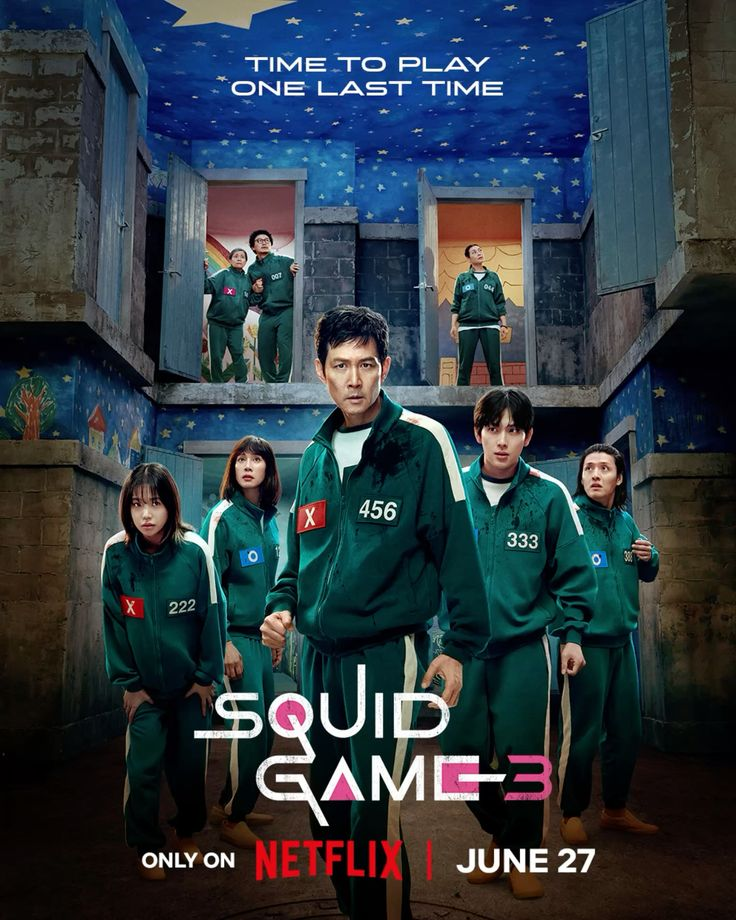
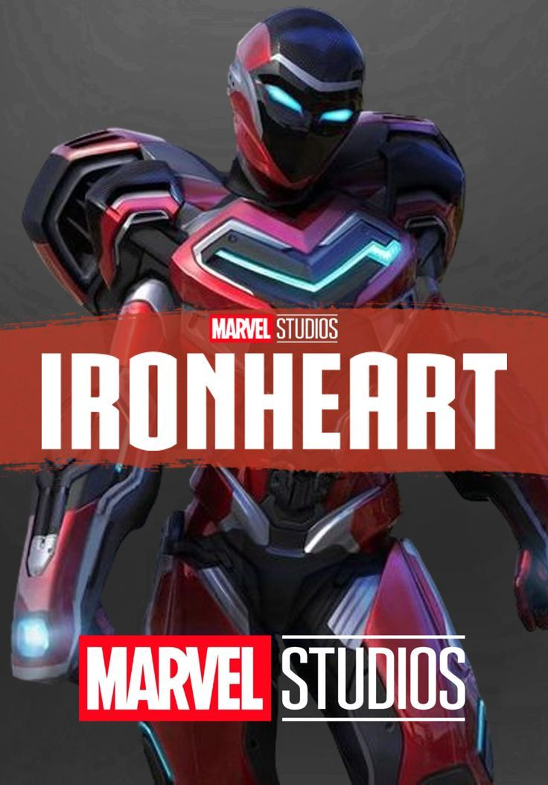
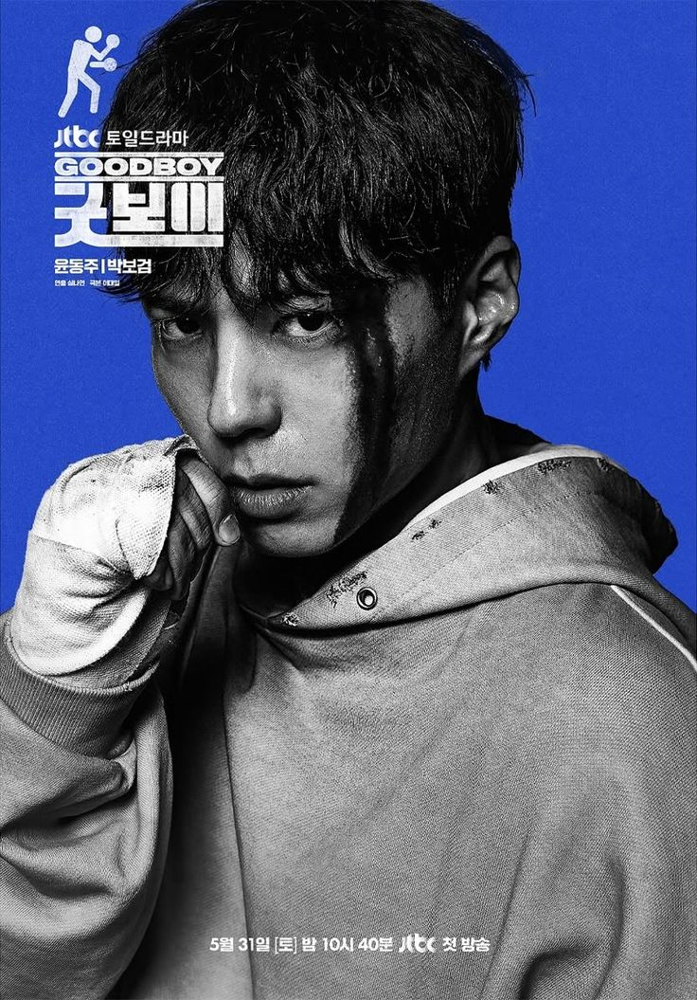

LATEST SHOWs & MOVIEs

Squid Game – S3
Squid Game – S3 june 27
Explosive, emotional, and
totally gripping finale.

F1: The Movie june 14
Thrilling racing visuals with
decent storytelling.
The Waterfront june 20
A dark political thriller with
solid performances.

Ironheart
Ironheart june 26
Marvel’s tech-savvy teen gets
a decent start.
Housefull 5 june 7
Full-on comedy, light-hearted
entertainer
Sitaare Zameen Parjune 20
A heartfelt emotional drama
by Aamir Khan.

Smoke
Smokejune 28
Stylish crime mystery with
deep characters..
Bhool Chuk Maaf june 27
A dark comedy with suspense
and satire.